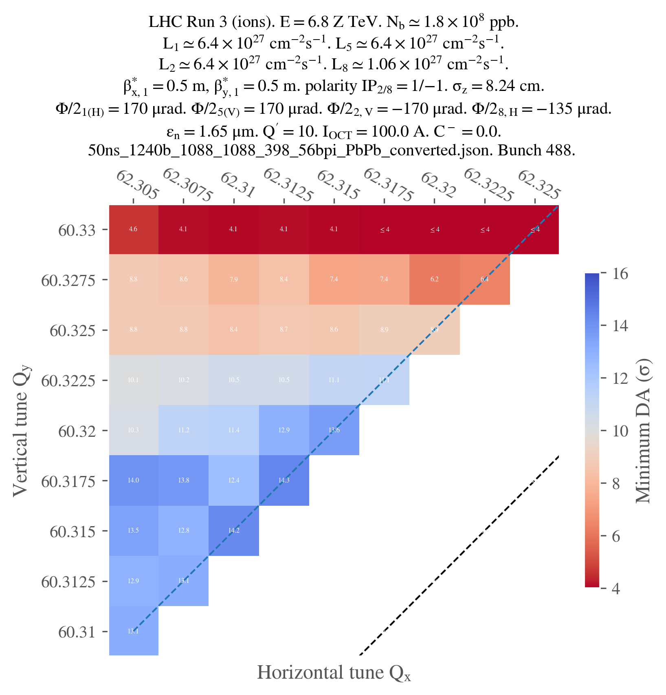

Doing an 1-generational scan
Doing a 1-generational scan is usually not optimal as the step consisting in builing the Xsuite collider from the MAD-X files is time-consuming and identical for all the parametrization. However, you might want to proceed differently, so here's a demonstration of how you can adapt the different configuration files and scripts to do a 1-generational scan. We will work with the default run III ions configuration for this example, doing a small tune scan.
Scan configuration
The scan configuration is very simple, as we only have one generation.
# ==================================================================================================
# --- Structure of the study ---
# ==================================================================================================
name: example_scan_1_gen
# List all useful files that will be used by executable in generations below
# These files are placed at the root of the study
dependencies:
main_configuration: config_runIII_ions.yaml
structure:
# First generation is always at the root of the study
# such that config_hllhc16.yaml is accessible as ../config_hllhc16.yaml
generation_1:
executable: custom_files/generation_1_custom.py
common_parameters:
# Needs to be redeclared as it's used for parallelization
# And re-used ine the second generation
n_split: 5
scans:
distribution_file:
# Number of paths is set by n_split in the main config
path_list: ["____.parquet", n_split]
qx:
subvariables: [lhcb1, lhcb2]
linspace: [62.305, 62.330, 11]
qy:
subvariables: [lhcb1, lhcb2]
linspace: [60.305, 60.330, 11]
condition: qy >= qx - 2 + 0.0039
Template script
As you can see in the configuration scan, we need to create a template script for our job. We will do this by basically merging the generation_1.py and generation_2_level_by_nb.py scripts (see here).
"""This is a template script for generation 1 of simulation study, in which ones generates a
particle distribution and a collider from a MAD-X model."""
# ==================================================================================================
# --- Imports
# ==================================================================================================
# Import standard library modules
import contextlib
import logging
import os
import time
# Import third-party modules
import numpy as np
import pandas as pd
# Import user-defined modules
from study_da.generate import (
MadCollider,
ParticlesDistribution,
XsuiteCollider,
XsuiteTracking,
)
from study_da.utils import (
load_dic_from_path,
set_item_in_dic,
write_dic_to_path,
)
# Set up the logger here if needed
# ==================================================================================================
# --- Script functions
# ==================================================================================================
def build_distribution(config_particles):
# Build object for generating particle distribution
distr = ParticlesDistribution(config_particles)
# Build particle distribution
particle_list = distr.return_distribution_as_list()
# Write particle distribution to file
distr.write_particle_distribution_to_disk(particle_list)
def build_collider(config_mad):
# Build object for generating collider from mad
mc = MadCollider(config_mad)
# Build mad model
mad_b1b2, mad_b4 = mc.prepare_mad_collider()
# Build collider from mad model
collider = mc.build_collider(mad_b1b2, mad_b4)
# Twiss to ensure everything is ok
mc.activate_RF_and_twiss(collider)
# Clean temporary files
mc.clean_temporary_files()
# Save collider to json
mc.write_collider_to_disk(collider)
# Return the collider
return collider
def configure_collider(full_configuration):
# Get configuration
config_collider = full_configuration["config_collider"]
ver_hllhc_optics = full_configuration["config_mad"]["ver_hllhc_optics"]
ver_lhc_run = full_configuration["config_mad"]["ver_lhc_run"]
ions = full_configuration["config_mad"]["ions"]
collider_filepath = full_configuration["config_collider"][
"path_collider_file_for_configuration_as_input"
]
# Build object for configuring collider
xc = XsuiteCollider(config_collider, collider_filepath, ver_hllhc_optics, ver_lhc_run, ions)
# Load collider
collider = xc.load_collider()
# Install beam-beam
xc.install_beam_beam_wrapper(collider)
# Build trackers
# For now, start with CPU tracker due to a bug with Xsuite
# Refer to issue https://github.com/xsuite/xsuite/issues/450
collider.build_trackers() # (_context=context)
# Set knobs
xc.set_knobs(collider)
# Match tune and chromaticity
xc.match_tune_and_chroma(collider, match_linear_coupling_to_zero=True)
# Set filling scheme
xc.set_filling_and_bunch_tracked(ask_worst_bunch=False)
# Compute the number of collisions in the different IPs
n_collisions_ip1_and_5, n_collisions_ip2, n_collisions_ip8 = xc.compute_collision_from_scheme()
# Do the leveling if requested
if "config_lumi_leveling" in config_collider and not config_collider["skip_leveling"]:
xc.level_all_by_separation(
n_collisions_ip1_and_5, n_collisions_ip2, n_collisions_ip8, collider
)
else:
logging.warning(
"No leveling is done as no configuration has been provided, or skip_leveling"
" is set to True."
)
# Add linear coupling
xc.add_linear_coupling(collider)
# Rematch tune and chromaticity
xc.match_tune_and_chroma(collider, match_linear_coupling_to_zero=False)
# Assert that tune, chromaticity and linear coupling are correct one last time
xc.assert_tune_chroma_coupling(collider)
# Configure beam-beam if needed
if not xc.config_beambeam["skip_beambeam"]:
xc.configure_beam_beam(collider)
# Update configuration with luminosity now that bb is known
l_n_collisions = [
n_collisions_ip1_and_5,
n_collisions_ip2,
n_collisions_ip1_and_5,
n_collisions_ip8,
]
xc.record_final_luminosity(collider, l_n_collisions)
# Save collider to json (flag to save or not is inside function)
xc.write_collider_to_disk(collider, full_configuration)
# Get fingerprint
fingerprint = xc.return_fingerprint(collider)
return collider, fingerprint
def track_particles(full_configuration, collider, fingerprint):
# Get emittances
n_emitt_x = full_configuration["config_collider"]["config_beambeam"]["nemitt_x"]
n_emitt_y = full_configuration["config_collider"]["config_beambeam"]["nemitt_y"]
xst = XsuiteTracking(full_configuration["config_simulation"], n_emitt_x, n_emitt_y)
# Prepare particle distribution
particles, particle_id, l_amplitude, l_angle = xst.prepare_particle_distribution_for_tracking(
collider
)
# Track
particles_dict = xst.track(collider, particles)
# Convert particles to dataframe
particles_df = pd.DataFrame(particles_dict)
# ! Very important, otherwise the particles will be mixed in each subset
# Sort by parent_particle_id
particles_df = particles_df.sort_values("parent_particle_id")
# Assign the old id to the sorted dataframe
particles_df["particle_id"] = particle_id
# Register the amplitude and angle in the dataframe
particles_df["normalized amplitude in xy-plane"] = l_amplitude
particles_df["angle in xy-plane [deg]"] = l_angle * 180 / np.pi
# Add some metadata to the output for better interpretability
particles_df.attrs["hash"] = hash(fingerprint)
particles_df.attrs["fingerprint"] = fingerprint
particles_df.attrs["configuration"] = full_configuration
particles_df.attrs["date"] = time.strftime("%Y-%m-%d %H:%M:%S")
# Save output
particles_df.to_parquet(
full_configuration["config_simulation"]["path_distribution_file_output"]
)
def clean():
# Remote the correction folder, and potential C files remaining
with contextlib.suppress(Exception):
os.system("rm -rf correction")
os.system("rm -f *.cc")
# ==================================================================================================
# --- Parameters placeholders definition
# ==================================================================================================
dict_mutated_parameters = {} ###---parameters---###
path_configuration = "{} ###---main_configuration---###"
# In case the placeholders have not been replaced, use default path
if path_configuration.startswith("{}"):
path_configuration = "config.yaml"
# ==================================================================================================
# --- Script for execution
# ==================================================================================================
if __name__ == "__main__":
logging.info("Starting script")
# Load full configuration
full_configuration, ryaml = load_dic_from_path(path_configuration)
# Mutate parameters in configuration
for key, value in dict_mutated_parameters.items():
set_item_in_dic(full_configuration, key, value)
# Dump configuration
name_configuration = os.path.basename(path_configuration)
write_dic_to_path(full_configuration, name_configuration, ryaml)
# Build and save particle distribution
build_distribution(full_configuration["config_particles"])
# Build and save collider
build_collider(full_configuration["config_mad"])
# Configure collider
collider, fingerprint = configure_collider(full_configuration)
# Drop updated configuration
name_configuration = os.path.basename(path_configuration)
write_dic_to_path(full_configuration, name_configuration, ryaml)
# Track particles and save to disk
track_particles(full_configuration, collider, fingerprint)
# Clean temporary files
clean()
logging.info("Script finished")
This is a long file but there's really nothing new in here: it's literally the combination of the two scripts we've seen before.
Creating and submitting the study
The script to create and submit the study might be the trickier one, as we'll have to do a few adjustments to make sure everything works as expected. Here's the script:
# ==================================================================================================
# --- Imports
# ==================================================================================================
# Import standard library modules
import logging
import os
# Import third-party modules
# Import user-defined modules
from study_da import create, submit
from study_da.utils import load_template_configuration_as_dic, write_dic_to_path
# Set up the logger
logger = logging.getLogger(__name__)
logging.basicConfig(level=logging.INFO, format="%(asctime)s - %(levelname)s - %(message)s")
# ==================================================================================================
# --- Script to generate a study
# ==================================================================================================
# Load the template configuration
name_template_config = "config_runIII_ions.yaml"
config, ryaml = load_template_configuration_as_dic(name_template_config)
# Update the location of the paths since everything is in the same directory in this scan
config["config_collider"]["path_collider_file_for_configuration_as_input"] = (
"collider_file_for_configuration.json"
)
config["config_simulation"]["path_collider_file_for_tracking_as_input"] = (
"collider_file_for_tracking.json"
)
config["config_simulation"]["path_distribution_folder_input"] = "particles"
# Drop the configuration locally
write_dic_to_path(config, name_template_config, ryaml)
# Now generate the study in the local directory
path_tree, name_main_config = create(path_config_scan="config_scan.yaml", force_overwrite=False)
# Delete the configuration
os.remove(name_template_config)
# Define the variables of interest for the submission
path_python_environment = "/afs/cern.ch/work/c/cdroin/private/study-DA/.venv"
path_python_environment_container = "/usr/local/DA_study/miniforge_docker"
path_container_image = (
"/cvmfs/unpacked.cern.ch/gitlab-registry.cern.ch/cdroin/da-study-docker:757f55da"
)
force_configure = False
# Dependencies for the executable of each generation. Only needed if one uses HTC.
dic_dependencies_per_gen = {
1: ["acc-models-lhc"],
}
# Preconfigure submission to HTC
dic_config_jobs = {
"generation_1" + ".py": {
"request_gpu": False,
"submission_type": "htc_docker",
"htc_flavor": "testmatch",
}
}
# Submit the study
submit(
path_tree=path_tree,
path_python_environment=path_python_environment,
path_python_environment_container=path_python_environment_container,
path_container_image=path_container_image,
force_configure=force_configure,
dic_dependencies_per_gen=dic_dependencies_per_gen,
name_config=name_main_config,
dic_config_jobs=dic_config_jobs,
)
The main thing to notice is that the paths for the collider or particles folders must be adapted since everything will now be in the same directory. Otherwise, the script is pretty much the same as the one we've seen before.
Postprocessing and plotting
# ==================================================================================================
# --- Imports
# ==================================================================================================
from study_da.plot import get_title_from_configuration, plot_heatmap
from study_da.postprocess import aggregate_output_data
# ==================================================================================================
# --- Postprocess the study
# ==================================================================================================
df_final = aggregate_output_data(
"example_scan_1_gen/tree.yaml",
l_group_by_parameters=["qx_b1", "qy_b1"],
generation_of_interest=1,
name_output="output_particles.parquet",
write_output=True,
only_keep_lost_particles=True,
)
# ==================================================================================================
# --- Plot
# ==================================================================================================
title = get_title_from_configuration(
df_final,
ions=True,
display_LHC_version=True,
display_energy=True,
display_bunch_index=True,
display_CC_crossing=True,
display_bunch_intensity=True,
display_beta=True,
display_crossing_IP_1=True,
display_crossing_IP_2=True,
display_crossing_IP_5=True,
display_crossing_IP_8=True,
display_bunch_length=True,
display_polarity_IP_2_8=True,
display_emittance=True,
display_chromaticity=True,
display_octupole_intensity=True,
display_coupling=True,
display_filling_scheme=True,
display_tune=False,
display_luminosity_1=True,
display_luminosity_2=True,
display_luminosity_5=True,
display_luminosity_8=True,
display_PU_1=False,
display_PU_2=False,
display_PU_5=False,
display_PU_8=False,
)
fig, ax = plot_heatmap(
df_final,
horizontal_variable="qx_b1",
vertical_variable="qy_b1",
color_variable="normalized amplitude in xy-plane",
plot_contours=False,
xlabel=r"Horizontal tune $Q_x$",
ylabel=r"Vertical tune $Q_y$",
tick_interval=1,
symmetric_missing=True,
mask_lower_triangle=True,
shift_diagonal_lines=0,
title=title,
vmin=4,
vmax=16,
green_contour=2.0,
label_cbar="Minimum DA (" + r"$\sigma$" + ")",
output_path="1_gen_tune_scan.png",
vectorize=False,
fill_missing_value_with="interpolate",
)
The script to do the postprocessing is quite similar to the initial tune scan example. The only difference is that we now want to analyse the output of the generation 1.
However, for the plotting, there are a few differences to consider:
- We have to update the beta values
- Since we're studying ions, we have to set the
ionsparameter toTruein theget_title_from_configurationfunction. - Since the corresponding pile-up values are very low, we don't want to display them in the title.
- We want to display all the ticks since there are only 11 points in the scan. We set
tick_interval=1. - The diagonal lines have been shifted for some reason (this is most likely due to the fact that the scan is smaller than usual, not sure exactly why), so we have to set
shift_diagonal_lines=0in theplot_heatmapfunction (1is the default value). - We don't want to display the contours since the scan is small
- Since we're tracking ions, the DA tends to be much higher. Therefore, we have to adapt the
vminandvmaxvalues.
And that's it! Just for the sake of completeness, here's the final plot:
